ระบบบริหารจัดการงานซ่อมบำรุง คลังอะไหล่ และแผน PM โรงงานทอผ้าแบบครบวงจร พร้อมระบบคำนวณ SLA ทำงาน 12 ชม./วัน
ระบบ TextileOps CMMS รองรับการเข้าสู่ระบบได้ 3 รูปแบบ เพื่อความยืดหยุ่นและความสะดวกของทีมงานทั้งหน้าเครื่องและฝ่ายบริหาร
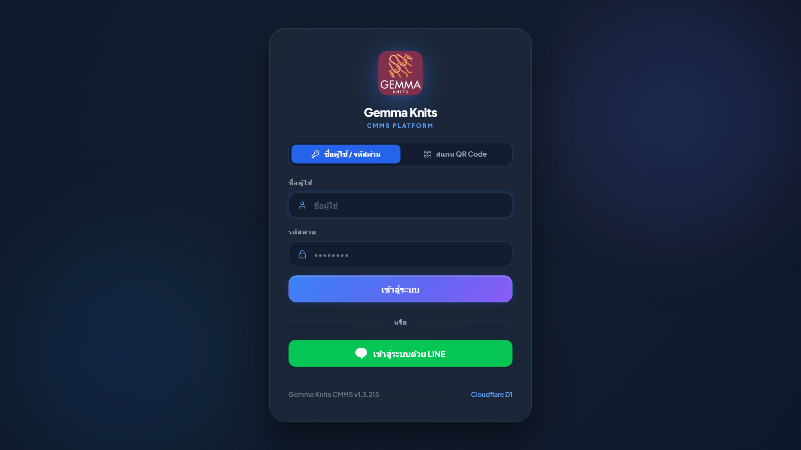
แดชบอร์ดเป็นศูนย์กลางการตรวจสอบประสิทธิภาพการทำงานของโรงงานทอผ้าแบบเรียลไทม์ (Real-Time Factory Cockpit) สรุปข้อมูลดัชนีชี้วัดความพร้อมและสถานะการเดินเครื่องจักร
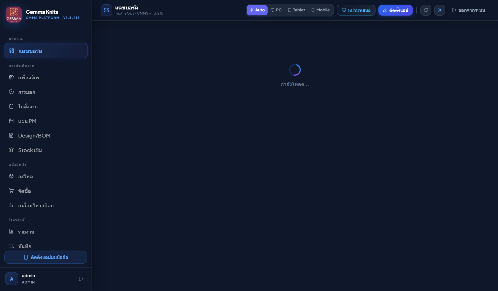
เมนูทะเบียนเครื่องจักรใช้สำหรับลงทะเบียนเครื่องจักรทอผ้า, ควบคุมโซนพื้นที่ (Zone A, B, C), พิมพ์ป้ายประจำเครื่อง (Tack Tag), และผูกกับ QR Code
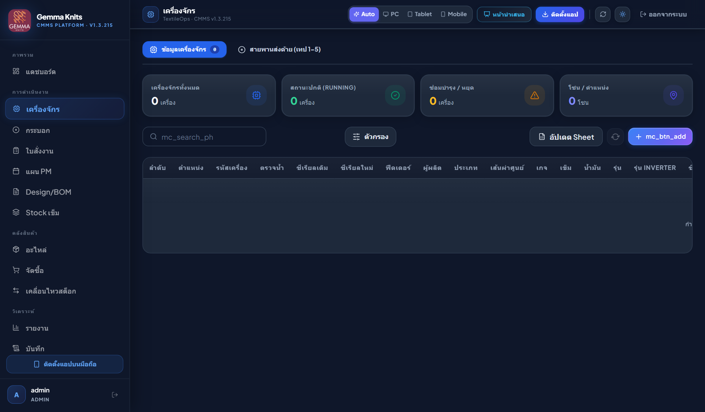
กระบอกทอผ้า (Cylinder) เป็นหัวใจสำคัญของโรงงานทอผ้า ระบบรองรับการติดตามประวัติการใช้งาน, การสลับเปลี่ยนกระบอกข้ามเครื่อง, และระบบการ์ดแสดงกลุ่มสเปกที่ตรงกัน (Spec Group Cards)
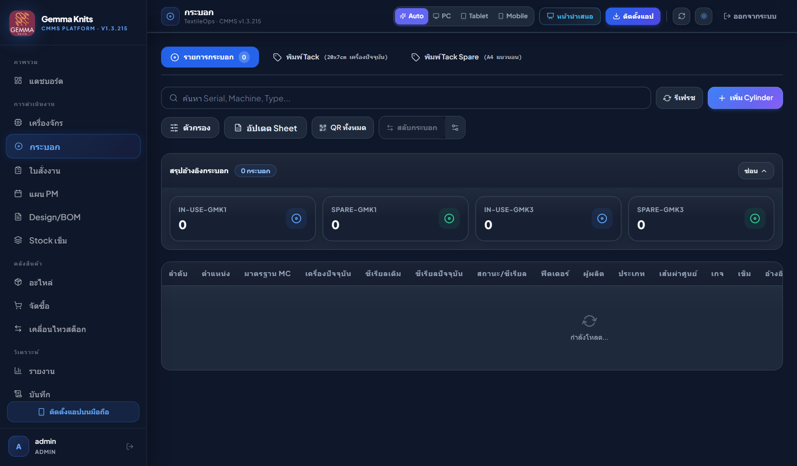
D, 30", 32G = 15 เครื่องศูนย์กลางการเปิดงานซ่อมและติดตามสถานะงานของช่าง โดยระบบใช้ตรรกะคำนวณ SLA ตามเวลาทำงานจริงวันละ 12 ชม. (08:00 - 20:00 น. จันทร์–เสาร์) ไม่นับเวลากลางคืนและวันอาทิตย์
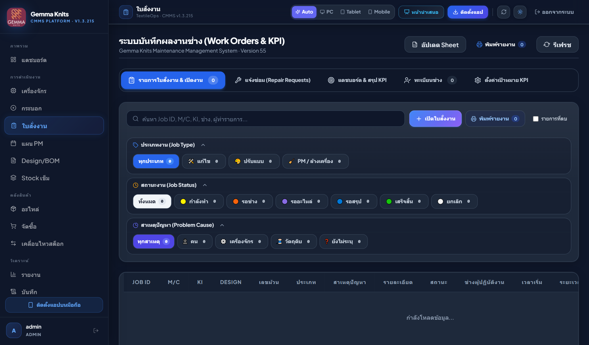
ปกติ (4.5/24ชม.) โดยหัก 12 ชม.เวลานอนออกอัตโนมัติ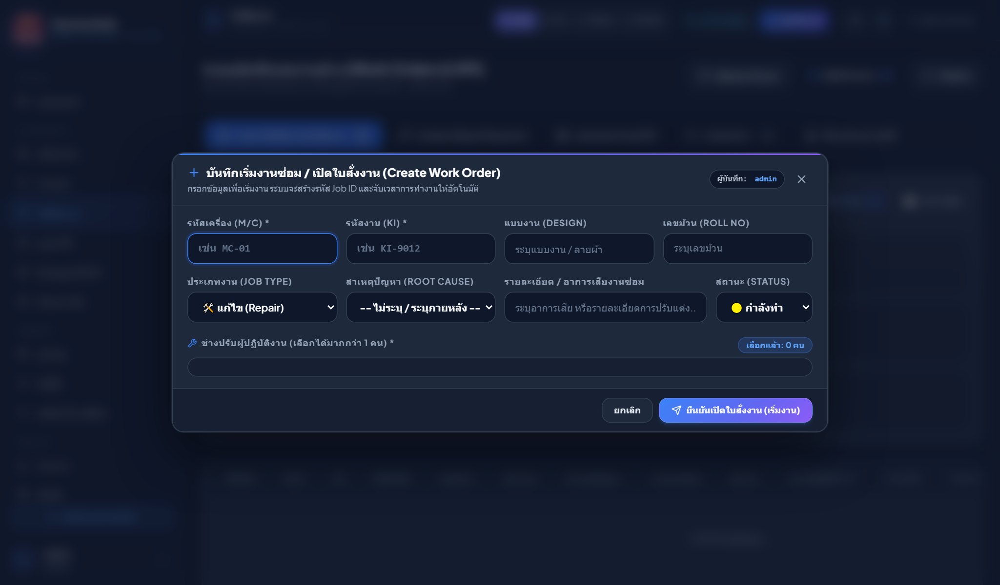
เมนูวางแผนและบันทึกผลการบำรุงรักษาเครื่องจักรตามรอบเวลา (Calendar-based) หรือตามรอบการทำงาน (Meter-based) พร้อมระบบตรวจเช็ก Center Check 10–12 จุด
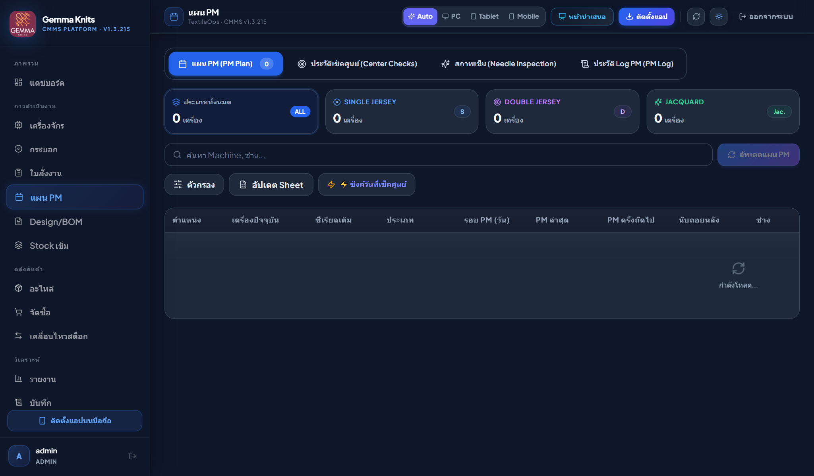
บันทึกโครงสร้างทางเทคนิคของผ้าแต่ละลาย (Bill of Materials) ควบคุมการติดตั้ง Cam, ประเภทเส้นด้าย, ความหนาแน่น, และอัตราการใช้เส้นด้ายต่อกิโลกรัม
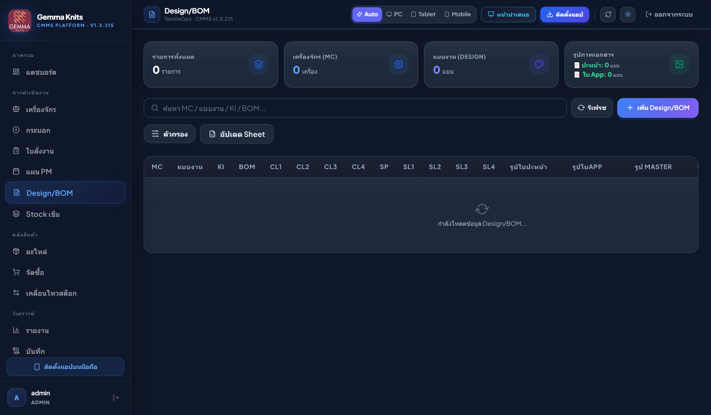
ระบบควบคุมคลังเข็มทอผ้าเฉพาะทาง แยกตามเบอร์เข็ม (Needle Code), รุ่น, ยี่ห้อ (Groz-Beckert, Samsung ฯลฯ) พร้อมระบบแจ้งเตือนจุดสั่งซื้อใหม่ (Reorder Point)
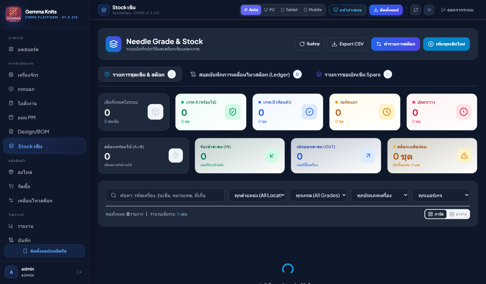
ฐานข้อมูลอะไหล่เครื่องจักรทอผ้าทั้งหมด ระบบควบคุมจำนวนคงเหลือ สถานที่จัดเก็บ (Bin Location) และฟังก์ชันค้นหาอะไหล่ด้วยภาพถ่าย AI (Visual Search)
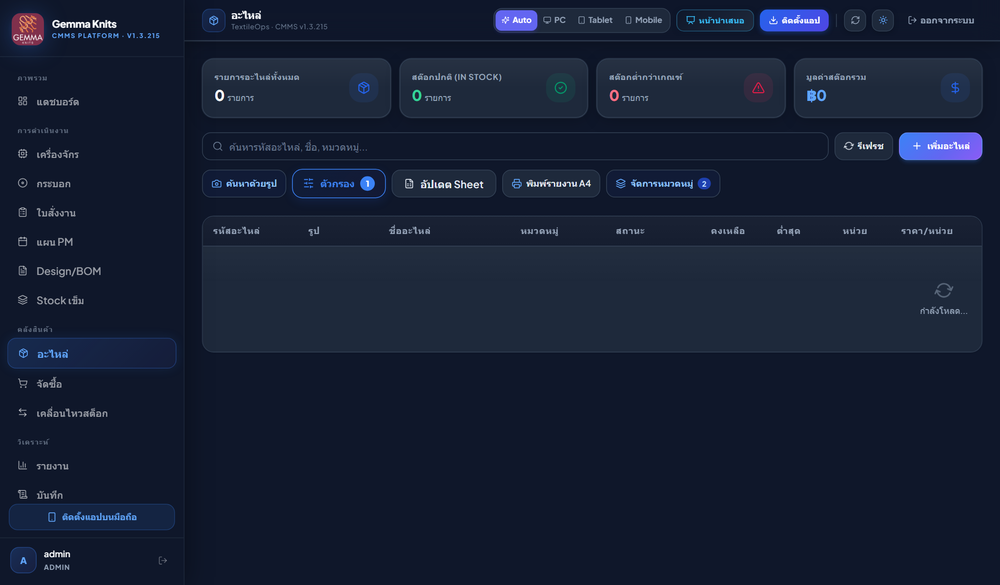
ขั้นตอนการจัดซื้ออะไหล่และอุปกรณ์ ตั้งแต่การเปิดใบขอซื้อ (Purchase Requisition - PR), การอนุมัติออกใบสั่งซื้อ (PO), และการบันทึกตรวจรับของเข้าคลัง
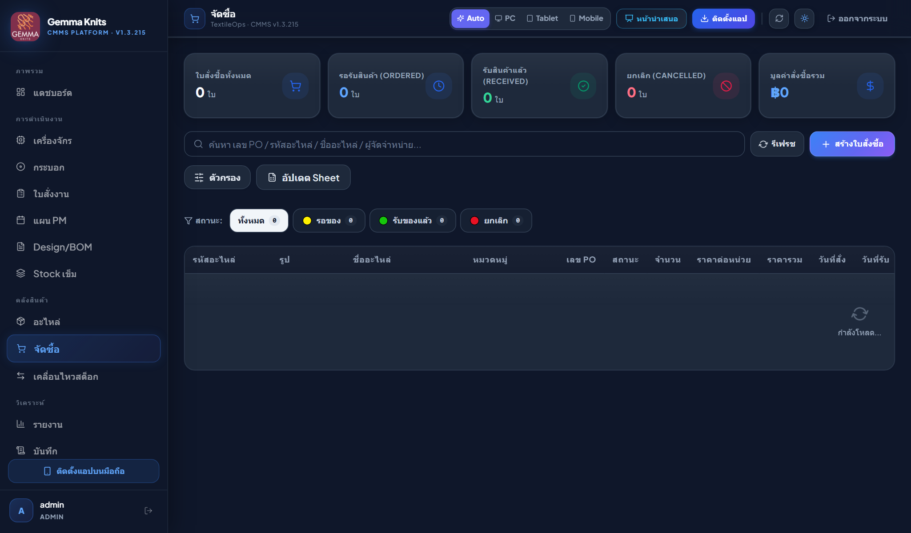
สมุดบันทึกความเคลื่อนไหวของสินค้าและอะไหล่ทั้งหมด (Stock Card Trail) ตรวจสอบความโปร่งใส ป้องกันสินค้าสูญหาย
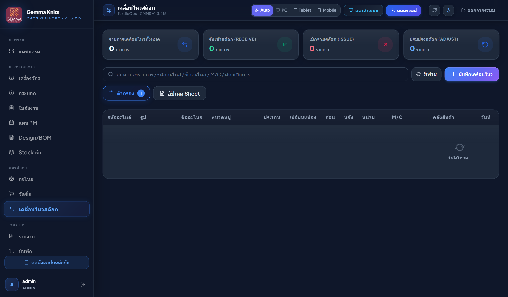
เครื่องมือวิเคราะห์เชิงลึกสำหรับผู้จัดการโรงงานและหัวหน้าฝ่ายช่าง เพื่อลดเวลาสูญเสียและเพิ่มผลผลิตของเครื่องจักร
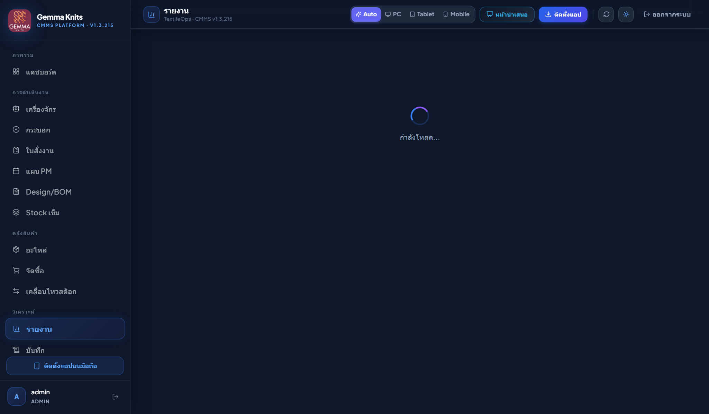
ระบบบันทึกความปลอดภัยตามมาตรฐาน Enterprise ตรวจสอบย้อนหลังทุกการกดเพิ่ม แก้ไข ลบ หรือการเข้าสู่ระบบ
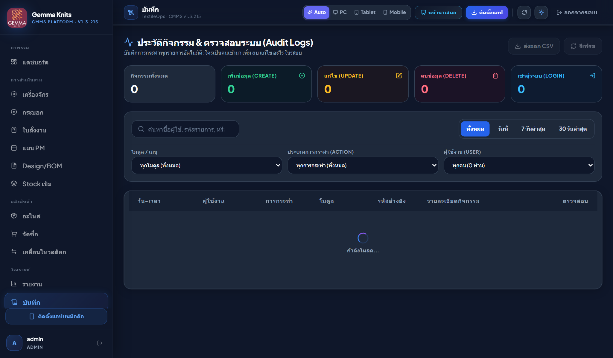
การบริหารจัดการบัญชีผู้ใช้งานและการกำหนดสิทธิ์รายเมนู (Granular Access Control) แยกสิทธิ์ View, Add, Edit, Delete
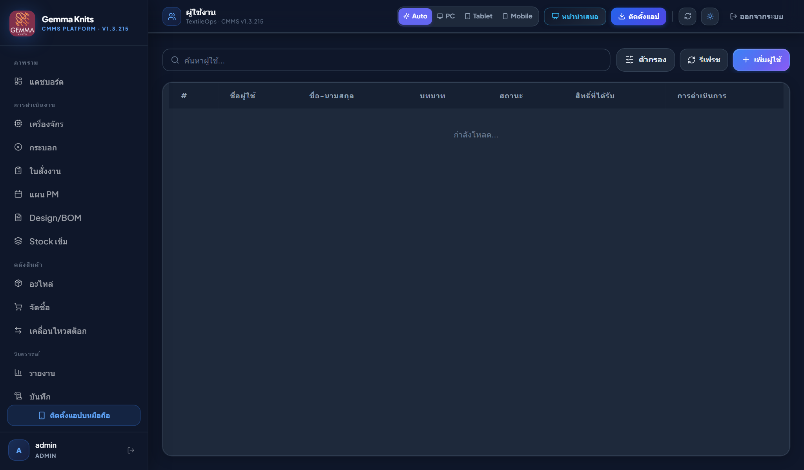
เมนูตั้งค่าสำหรับผู้ดูแลระบบ เชื่อมต่อ LINE Notify, LINE Messaging API, Google Sheets Webhook, และโควตา Cloudflare D1
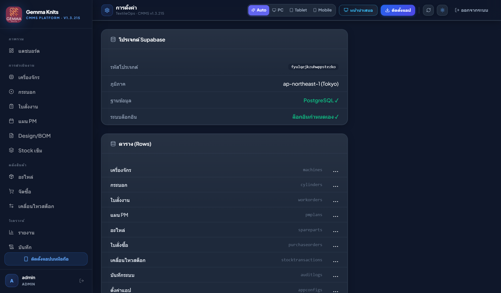
TextileOps CMMS ถูกออกแบบมาเพื่อการใช้งานหน้างานอย่างแท้จริง (Mobile-First Experience) ผ่านสมาร์ตโฟนระบบ iOS และ Android
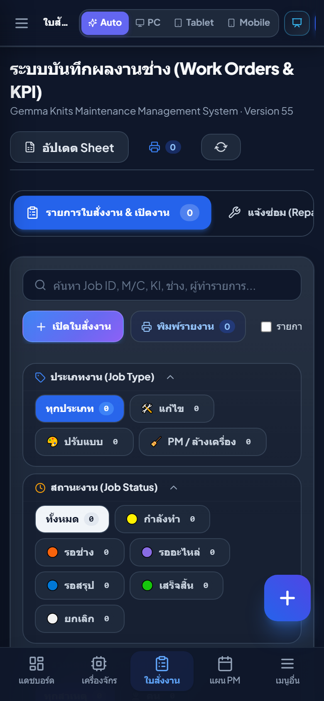
ก. การ์ดตัวกรองพับได้ & ปุ่มลอย (+) ล็อกตำแหน่ง
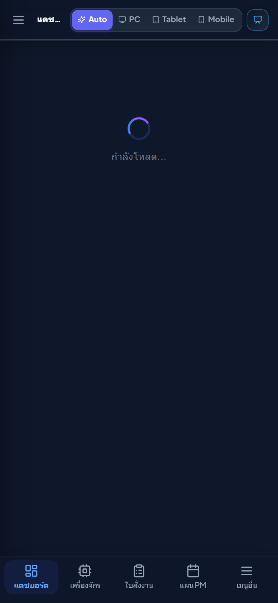
ข. เมนูลัดด้านล่าง (Mobile Bottom Navigation)